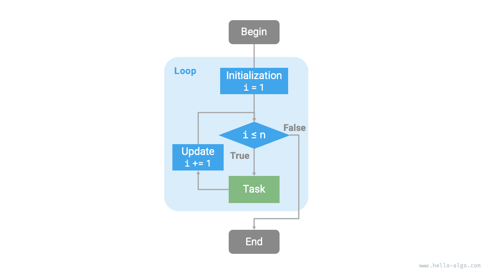
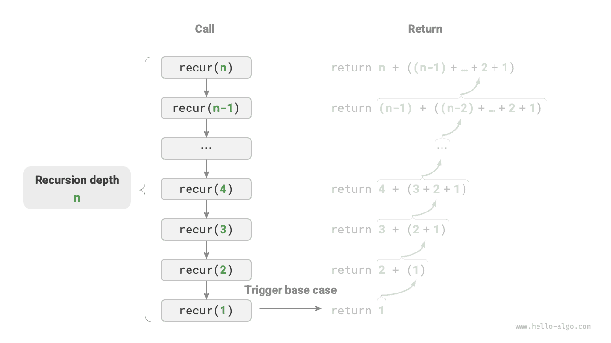
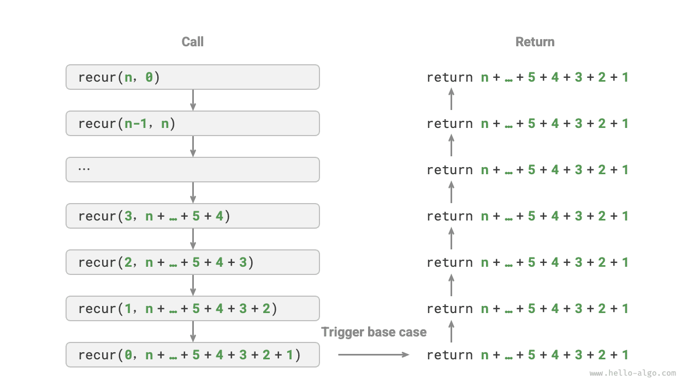

تحليل التعقيد
التكرار والتعاود
في الخوارزميات، يكون تنفيذ مهمة مراراً أمراً شائعاً جداً ومرتبطاً ارتباطاً وثيقاً بتحليل التعقيد. لذا، وقبل تقديم التعقيد الزمني والتعقيد المكاني، لنفهم أولاً كيفية تنفيذ المهام المتكرر في البرامج، أي بنيتي التحكم الأساسيتين في البرنامج: التكرار والتعاود.
التكرار
التكرار بنية تحكم لتنفيذ مهمة مراراً. وفي التكرار، ينفّذ البرنامج مقطعاً من الشيفرة مراراً في ظل شروط معينة حتى تتوقف تلك الشروط عن التحقق.
حلقة for
حلقة for من أكثر أشكال التكرار شيوعاً، وتصلح للاستخدام عندما يكون عدد التكرارات معروفاً مسبقاً.
تنفّذ الدالة التالية عملية الجمع $1 + 2 + \dots + n$ باستخدام حلقة for، وتُخزَّن النتيجة في المتغير res. لاحظ أن range(a, b) في Python يقابل مجالاً «مغلقاً من اليسار مفتوحاً من اليمين»، ويكون نطاق الاجتياز $a, a + 1, \dots, b-1$:
Go
/* حلقة for */
func forLoop(n int) int {
res := 0
// اجمع 1, 2, ..., n-1, n
for i := 1; i <= n; i++ {
res += i
}
return res
}
TypeScript
/* حلقة for */
function forLoop(n: number): number {
let res = 0;
// اجمع 1, 2, ..., n-1, n
for (let i = 1; i <= n; i++) {
res += i;
}
return res;
}
يوضح الشكل أدناه مخطط سير هذه الدالة الجمعية.

ويتناسب عدد العمليات في هذه الدالة الجمعية مع حجم بيانات الإدخال $n$، أو له «علاقة خطية». وفي الواقع، يصف التعقيد الزمني هذه «العلاقة الخطية» تحديداً. وسيُقدَّم المحتوى المتعلق بذلك بالتفصيل في القسم التالي.
حلقة while
وعلى غرار حلقة for، تُعَدّ حلقة while أيضاً طريقة لتنفيذ التكرار. وفي حلقة while، يتحقق البرنامج أولاً من الشرط في كل جولة؛ فإن كان الشرط صحيحاً واصل التنفيذ، وإلا أنهى الحلقة.
وفيما يلي نستخدم حلقة while لتنفيذ الجمع $1 + 2 + \dots + n$:
Go
/* حلقة while */
func whileLoop(n int) int {
res := 0
// هيّئ متغير الشرط
i := 1
// اجمع 1, 2, ..., n-1, n
for i <= n {
res += i
// حدّث متغير الشرط
i++
}
return res
}
TypeScript
/* حلقة while */
function whileLoop(n: number): number {
let res = 0;
let i = 1; // هيّئ متغير الشرط
// اجمع 1, 2, ..., n-1, n
while (i <= n) {
res += i;
i++; // حدّث متغير الشرط
}
return res;
}
تتمتع حلقة while بمرونة أكبر من حلقة for. ففي حلقة while يمكننا تصميم خطوتي تهيئة متغير الشرط وتحديثه بحرية.
على سبيل المثال، في الشيفرة التالية يُحدَّث متغير الشرط $i$ مرتين في كل جولة، وهو أمر غير مريح التنفيذ باستخدام حلقة for:
وعموماً، شيفرة حلقات for أكثر إحكاماً، بينما حلقات while أكثر مرونة؛ وكلتاهما تستطيع تنفيذ بنى تكرارية. ويجب تحديد أيّهما تُستخدم بناءً على متطلبات المسألة المحددة.
الحلقات المتداخلة
يمكننا تداخل بنية حلقية داخل أخرى. وفيما يلي مثال باستخدام حلقات for:
Go
/* حلقة for متداخلة */
func nestedForLoop(n int) string {
res := ""
// حلقة i = 1, 2, ..., n-1, n
for i := 1; i <= n; i++ {
for j := 1; j <= n; j++ {
// حلقة j = 1, 2, ..., n-1, n
res += fmt.Sprintf("(%d, %d), ", i, j)
}
}
return res
}
TypeScript
/* حلقة for متداخلة */
function nestedForLoop(n: number): string {
let res = '';
// حلقة i = 1, 2, ..., n-1, n
for (let i = 1; i <= n; i++) {
// حلقة j = 1, 2, ..., n-1, n
for (let j = 1; j <= n; j++) {
res += `(${i}, ${j}), `;
}
}
return res;
}
ويوضح الشكل أدناه مخطط سير هذه الحلقة المتداخلة.

وفي هذه الحالة يتناسب عدد عمليات الدالة مع $n^2$، أو يكون لزمن تشغيل الخوارزمية «علاقة تربيعية» بحجم بيانات الإدخال $n$.
ويمكننا مواصلة إضافة حلقات متداخلة، حيث يمكن النظر إلى كل مستوى تداخل إضافي على أنه زيادة في الأبعاد، ترفع التعقيد الزمني إلى «علاقة تكعيبية» و«علاقة من الدرجة الرابعة» وهكذا.
التعاود
التعاود استراتيجية خوارزمية تحل المسائل بجعل دالة تستدعي نفسها. ويتكوّن أساساً من مرحلتين.
- النزول: تستدعي الدالة نفسها باستمرار إلى عمق أكبر، وتمرّر عادةً معاملات أصغر أو أكثر تبسيطاً، حتى تصل إلى «شرط التوقف».
- الصعود: بعد تحقّق «شرط التوقف»، تعود الدالة طبقةً طبقة من أعمق دالة تعاودية، وتجمع نتيجة كل طبقة.
ومن منظور التنفيذ، تتكوّن الشيفرة التعاودية أساساً من ثلاثة عناصر.
- شرط التوقف: يُستخدم لتحديد متى ننتقل من «النزول» إلى «الصعود».
- الاستدعاء التعاودي: يقابل «النزول»، حيث تستدعي الدالة نفسها، عادةً بمعاملات أصغر أو أكثر تبسيطاً.
- إعادة النتيجة: تقابل «الصعود»، حيث تُعاد نتيجة مستوى التعاود الحالي إلى الطبقة السابقة.
لاحظ الشيفرة التالية. لا يلزمنا سوى استدعاء الدالة recur(n) لإكمال حساب $1 + 2 + \dots + n$:
Go
/* التعاود */
func recur(n int) int {
// شرط التوقف
if n == 1 {
return 1
}
// النزول: الاستدعاء التعاودي
res := recur(n - 1)
// الصعود: إعادة النتيجة
return n + res
}
TypeScript
/* التعاود */
function recur(n: number): number {
// شرط التوقف
if (n === 1) return 1;
// النزول: الاستدعاء التعاودي
const res = recur(n - 1);
// الصعود: إعادة النتيجة
return n + res;
}
ويوضح الشكل أدناه العملية التعاودية لهذه الدالة.

ورغم أن التكرار والتعاود يستطيعان من منظور حسابي تحقيق النتائج نفسها، فهما يمثّلان نموذجين مختلفين تماماً للتفكير في المسائل وحلها.
- التكرار: يحل المسائل «من الأسفل إلى الأعلى». فيبدأ من أبسط الخطوات، ثم تُنفَّذ هذه الخطوات مراراً أو تُجمَّع حتى تكتمل المهمة.
- التعاود: يحل المسائل «من الأعلى إلى الأسفل». فتُفكَّك المسألة الأصلية إلى مسائل فرعية أصغر لها الصيغة نفسها، وتستمر هذه المسائل الفرعية في التفكك إلى مسائل فرعية أصغر حتى الوصول إلى الحالة الأساسية (حيث يكون الحل معروفاً).
وباتخاذ الدالة الجمعية أعلاه مثالاً، لتكن المسألة $f(n) = 1 + 2 + \dots + n$.
- التكرار: يحاكي عملية الجمع في حلقة، فيجتاز من $1$ إلى $n$، وينفّذ عملية الجمع في كل جولة للحصول على $f(n)$.
- التعاود: يفكّك المسألة إلى المسألة الفرعية $f(n) = n + f(n-1)$، ويستمر في التفكيك (تعاودياً) حتى يتوقف عند الحالة الأساسية $f(1) = 1$.
مكدس الاستدعاء
في كل مرة تستدعي فيها دالة تعاودية نفسها، يخصّص النظام ذاكرة للدالة المستدعاة حديثاً لتخزين المتغيرات المحلية وعناوين الاستدعاء وغيرها من المعلومات. وهذا يؤدي إلى نتيجتين.
- تُخزَّن بيانات سياق الدالة في منطقة ذاكرة تسمى «مساحة إطار المكدس»، ولا تُحرَّر حتى تعود الدالة. لذلك، يستهلك التعاود عادةً مساحة ذاكرة أكبر من التكرار.
- تترتب على استدعاءات الدوال التعاودية تكلفة إضافية. لذلك، يكون التعاود عادةً أقل كفاءة زمنياً من الحلقات.
وكما يوضح الشكل أدناه، قبل تحقّق شرط التوقف توجد $n$ من الدوال التعاودية غير العائدة في الوقت نفسه، بعمق تعاود $n$.

وفي الممارسة العملية، يكون عمق التعاود المسموح به في لغات البرمجة محدوداً عادةً، وقد يؤدي التعاود العميق جداً إلى أخطاء تجاوز سعة المكدس.
التعاود الذيل
ومن المثير للاهتمام أن الدالة إذا جعلت الاستدعاء التعاودي آخر خطوة قبل العودة، فقد يحسّنه المترجم أو المفسّر بحيث تصبح كفاءته المكانية مماثلة للتكرار. وتسمى هذه الحالة التعاود الذيل.
- التعاود العادي: عندما تعود الدالة إلى الطبقة السابقة، يلزمها مواصلة تنفيذ الشيفرة، لذا يحتاج النظام إلى حفظ سياق استدعاء الطبقة السابقة.
- التعاود الذيل: الاستدعاء التعاودي هو آخر عملية قبل عودة الدالة، أي أنه بعد العودة إلى الطبقة السابقة لا حاجة إلى مواصلة تنفيذ عمليات أخرى، لذا لا يحتاج النظام إلى حفظ سياق دالة الطبقة السابقة.
وباتخاذ حساب $1 + 2 + \dots + n$ مثالاً، يمكننا تعيين متغير النتيجة res معاملاً للدالة لتنفيذ التعاود الذيل:
Go
/* التعاود الذيل */
func tailRecur(n int, res int) int {
// شرط التوقف
if n == 0 {
return res
}
// الاستدعاء التعاودي الذيل
return tailRecur(n-1, res+n)
}
TypeScript
/* التعاود الذيل */
function tailRecur(n: number, res: number): number {
// شرط التوقف
if (n === 0) return res;
// الاستدعاء التعاودي الذيل
return tailRecur(n - 1, res + n);
}
وتظهر عملية تنفيذ التعاود الذيل في الشكل أدناه. وبمقارنة التعاود العادي بالتعاود الذيل، تُنفَّذ عملية الجمع في نقطتين مختلفتين.
- التعاود العادي: تُنفَّذ عملية الجمع أثناء عملية «الصعود»، وتتطلب عملية جمع إضافية بعد عودة كل طبقة.
- التعاود الذيل: تُنفَّذ عملية الجمع أثناء عملية «النزول»؛ ولا تحتاج عملية «الصعود» إلا إلى العودة طبقةً طبقة.

يرجى ملاحظة أن كثيراً من المترجمات أو المفسّرات لا تدعم تحسين التعاود الذيل. فمثلاً لا يدعم Python تحسين التعاود الذيل افتراضياً، لذا حتى إذا كانت الدالة في صيغة التعاود الذيل، فقد تواجه مع ذلك مشكلات تجاوز سعة المكدس.
شجرة التعاود
عند التعامل مع مسائل خوارزمية مرتبطة بـ«التقسيم والتغلب»، يوفر التعاود غالباً نهجاً أكثر حدساً وشيفرة أكثر قابلية للقراءة من التكرار. ولنأخذ «متتالية فيبوناتشي» مثالاً.
بمعطى متتالية فيبوناتشي $0, 1, 1, 2, 3, 5, 8, 13, \dots$، ابحث عن العدد رقم $n$ في المتتالية.
ولتكن القيمة رقم $n$ في متتالية فيبوناتشي $f(n)$. يمكن الحصول بسهولة على نتيجتين.
- العددان الأولان في المتتالية هما $f(1) = 0$ و$f(2) = 1$.
- كل عدد في المتتالية هو مجموع العددين السابقين له، أي $f(n) = f(n - 1) + f(n - 2)$.
وباتباع علاقة التعاود لإجراء استدعاءات تعاودية، مع اعتبار العددين الأولين شرطي توقف، يمكننا كتابة الشيفرة التعاودية. فاستدعاء fib(n) سيعطينا العدد رقم $n$ من متتالية فيبوناتشي:
Go
/* متتالية فيبوناتشي: التعاود */
func fib(n int) int {
// شرط التوقف f(1) = 0, f(2) = 1
if n == 1 || n == 2 {
return n - 1
}
// الاستدعاء التعاودي f(n) = f(n-1) + f(n-2)
res := fib(n-1) + fib(n-2)
// أعد النتيجة f(n)
return res
}
TypeScript
/* متتالية فيبوناتشي: التعاود */
function fib(n: number): number {
// شرط التوقف f(1) = 0, f(2) = 1
if (n === 1 || n === 2) return n - 1;
// الاستدعاء التعاودي f(n) = f(n-1) + f(n-2)
const res = fib(n - 1) + fib(n - 2);
// أعد النتيجة f(n)
return res;
}
وبمراقبة الشيفرة أعلاه، نُجري استدعاءين تعاوديين داخل الدالة، أي أن الاستدعاء الواحد يُنتج فرعي استدعاء. وكما يوضح الشكل أدناه، يؤدي هذا الاستدعاء التعاودي المتكرر في النهاية إلى توليد شجرة تعاود من $n$ مستوى.

وفي جوهره، يجسّد التعاود نموذج «تفكيك المسألة إلى مسائل فرعية أصغر»، وهذه الاستراتيجية القائمة على التقسيم والتغلب بالغة الأهمية.
- من منظور خوارزمي، تطبّق استراتيجيات خوارزمية مهمة كثيرة، مثل البحث والترتيب والتتبّع الرجعي والتقسيم والتغلب والبرمجة الديناميكية، طريقة التفكير هذه تطبيقاً مباشراً أو غير مباشر.
- من منظور بنى البيانات، يلائم التعاود بطبيعته معالجة المسائل المتعلقة بالقوائم المترابطة والأشجار والرسوم البيانية، لأنها ملائمة للتحليل بطريقة التفكير التقسيمية.
مقارنة بين الاثنين
وبتلخيص المحتوى أعلاه، وكما يوضح الجدول أدناه، يختلف التكرار والتعاود في التنفيذ والأداء وقابلية التطبيق.
جدول
| التكرار | التعاود | |
|---|---|---|
| التنفيذ | بنية حلقية | دالة تستدعي نفسها |
| الكفاءة الزمنية | أكثر كفاءة عموماً، بلا تكلفة استدعاء دوال | كل استدعاء دالة تترتب عليه تكلفة |
| استخدام الذاكرة | يستخدم عادةً مقداراً ثابتاً من مساحة الذاكرة | قد تستخدم الاستدعاءات المتراكمة قدراً كبيراً من مساحة إطار المكدس |
| المسائل الملائمة | تصلح لمهام حلقية بسيطة، بشيفرة حدسية قابلة للقراءة | تصلح لتفكيك المسائل الفرعية، مثل الأشجار والرسوم البيانية والتقسيم والتغلب والتتبّع الرجعي وغيرها، ببنية شيفرة موجزة وواضحة |
إذا وجدت المحتوى التالي صعب الفهم، يمكنك مراجعته بعد قراءة فصل «المكدس».
فما العلاقة الجوهرية بين التكرار والتعاود؟ باتخاذ الدالة التعاودية أعلاه مثالاً، تُنفَّذ عملية الجمع أثناء مرحلة «الصعود» في التعاود. وهذا يعني أن الدالة المستدعاة أولاً تُكمل عملية جمعها أخيراً فعلاً، وتشبه آلية العمل هذه مبدأ «آخر ما يدخل يخرج أولاً» في المكدس.
وفي الواقع، أصبحت المصطلحات التعاودية مثل «مكدس الاستدعاء» و«مساحة إطار المكدس» توحي أصلاً بالعلاقة الوثيقة بين التعاود والمكدس.
- النزول: عند استدعاء دالة، يخصّص النظام إطار مكدس جديداً على «مكدس الاستدعاء» لتلك الدالة لتخزين متغيراتها المحلية ومعاملاتها وعنوان العودة وبيانات أخرى.
- الصعود: عند اكتمال تنفيذ الدالة وعودتها، يُزال إطار المكدس المقابل من «مكدس الاستدعاء»، فتُستعاد بيئة تنفيذ الدالة السابقة.
لذلك، يمكننا استخدام مكدس صريح لمحاكاة سلوك مكدس الاستدعاء، فنحوّل التعاود بذلك إلى صيغة تكرارية:
Go
/* حاكِ التعاود باستخدام التكرار */
func forLoopRecur(n int) int {
// استخدم مكدساً صريحاً لمحاكاة مكدس استدعاء النظام
stack := list.New()
res := 0
// النزول: الاستدعاء التعاودي
for i := n; i > 0; i-- {
// حاكِ «النزول» بـ«الدفع»
stack.PushBack(i)
}
// الصعود: إعادة النتيجة
for stack.Len() != 0 {
// حاكِ «الصعود» بـ«السحب»
res += stack.Back().Value.(int)
stack.Remove(stack.Back())
}
// res = 1+2+3+...+n
return res
}
TypeScript
/* حاكِ التعاود باستخدام التكرار */
function forLoopRecur(n: number): number {
// استخدم مكدساً صريحاً لمحاكاة مكدس استدعاء النظام
const stack: number[] = [];
let res: number = 0;
// النزول: الاستدعاء التعاودي
for (let i = n; i > 0; i--) {
// حاكِ «النزول» بـ«الدفع»
stack.push(i);
}
// الصعود: إعادة النتيجة
while (stack.length) {
// حاكِ «الصعود» بـ«السحب»
res += stack.pop();
}
// res = 1+2+3+...+n
return res;
}
وبمراقبة الشيفرة أعلاه، عندما يُحوَّل التعاود إلى تكرار تصبح الشيفرة أكثر تعقيداً. ورغم إمكان تحويل التكرار والتعاود إلى بعضهما في كثير من الحالات، فقد لا يكون ذلك مجدياً للسببين التاليين.
- قد تكون الشيفرة المحوَّلة أصعب في الفهم وأقل قابلية للقراءة.
- في بعض المسائل المعقدة، قد تكون محاكاة سلوك مكدس استدعاء النظام صعبة جداً.
وخلاصة القول، يعتمد الاختيار بين التكرار والتعاود على طبيعة المسألة المحددة. وفي ممارسة البرمجة، من الجوهري الموازنة بين مزايا الطريقتين وعيوبهما واختيار الطريقة المناسبة وفق السياق.